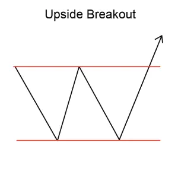
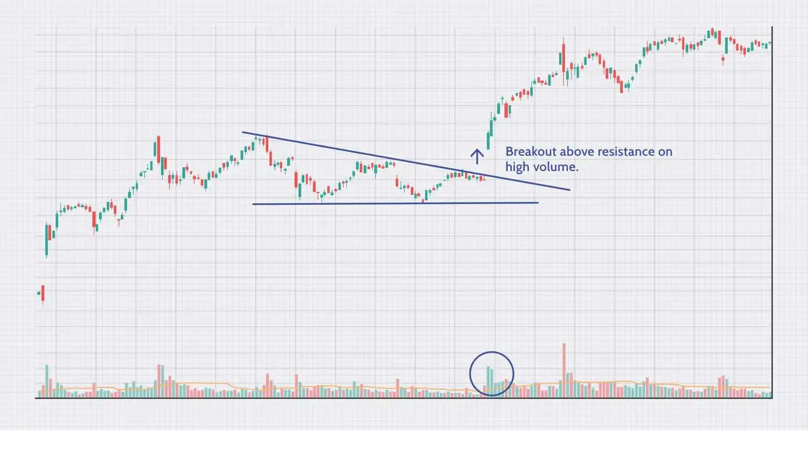

Implicaciones
Un Upside Breakout se considera una señal de aumento, marcando una brecha de un rango de negociación para iniciar una nueva tendencia de aumento.
Descripción
Un Upside Breakout ocurre cuando el precio de un instrumento financiero se rompe a través de la parte superior de un rango de negociación. Este Evento Técnico indica que los precios subirán explosivamente durante un período de días o semanas a medida que aparezca una tendencia ascendente casi vertical.

Consideraciones de negociación
Tendencia de entrada
La tendencia de entrada es una característica importante del patrón. Una tendencia de entrada superficial puede indicar un período de consolidación antes de que comience el movimiento de los precios indicado por el patrón. Busque una tendencia de entrada que sea más larga que la duración del patrón. Una buena regla es que la tendencia de entrada debe ser al menos dos veces la duración del patrón.
Criterios que respaldan
Duración del rango de negociación
La duración del rango de negociación para el que se produjo el breakout puede proporcionar una indicación de la fuerza del breacout. Cuanto mayor sea la duración del rango de negociación, más significativa será la breakout.
Estreñimiento del rango de negociación
La "estrechura" del rango de negociación también se puede utilizar para medir la breakout. Para determinar la estrechez del rango de negociación comparar el límite superior con el limite inferior de la gama de operaciones. Si el rango de negociación tiene una pequeña diferencia entre el límite superior y inferior (lo que lo hace estrecho), entonces la breakout se considera más fuerte y más confiable.
Apoyo o Resistencia
Busque una región de apoyo o resistencia alrededor del precio objetivo. Una región de consolidación de precios o una fuerte línea de apoyo y resistencia en o alrededor del precio objetivo es un indicador fuerte de que el precio se moverá a ese punto.
Media móvil
Los precios que se mueven rápidamente un 50% por encima de la media móvil de 200 días apoyan fuertemente este patrón.
Tendencia de media móvil
Mira la dirección de la tendencia de la media móvil. Para patrones de corta duración, utilice una media móvil de 50 días, para patrones más largos utilice un promedio móvil de 200 días. La media móvil debería cambiar de dirección dentro de la duración del patrón y ahora debería dirigirse en la dirección indicada por el patrón./p>
Volumen
Un fuerte pico de volumen el día de la confirmación del patrón es un indicador fuerte en apoyo del potencial para este patrón. El pico de volumen debe estar significativamente por encima de la media del volumen durante la duración del patrón. Además, el volumen durante la duración del patrón debería estar disminuyendo en promedio.
Criterios que refuten
Duración del rango de negociación
La duración del rango de negociación para el que se produjo el breakout puede proporcionar una indicación de la fuerza del breacout. Cuanto más corta sea la duración del intervalo de negociación, menos significativa será la breakout.
Estreñimiento del rango de negociación
La "estrechura" del rango de negociación también se puede utilizar para medir la breakout. Para determinar la estrechez del rango de negociación comparar el límite superior con el limite inferior de la gama de operaciones. Si el rango de negociación tiene una gran diferencia entre el límite superior y inferior (lo que lo hace amplio), entonces la breakout se considera más débil y menos confiable.
Sin aumento de volumen en la confirmación
La falta de un pico de volumen el día de la confirmación del patrón es una indicación de que este patrón puede no ser fiable. Además, si el volumen ha permanecido constante, o estaba aumentando, durante la duración del patrón, entonces este patrón debe considerarse menos fiable.
Tendencia de media móvil
Mira la dirección de la tendencia de la media móvil. Para patrones de corta duración, utilice una media móvil de 50 días, para patrones más largos utilice un promedio móvil de 200 días. Una media móvil que está en tendencia en la dirección opuesta a la indicada por el patrón es una indicación de que este patrón no es fiable.
Tendencia de entrada corta
Una tendencia de entrada que es significativamente más corta que la duración del patrón es una indicación de que este patrón debe considerarse menos confiable.
